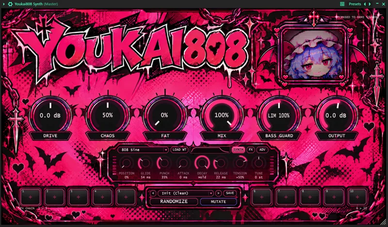

Youkai808
The 808 Destroyer: Clean Sub To Blown-Out Jugg Madness In One Plugin.
Your 808 Sounds Like Everyone Else's? Youkai808 Is An 808 Synth And A 10-Slot Destruction Rack In One. Start From A Clean Sub And Drag It Anywhere: A Touch Of Grit, Whining Overtones, Folded Perc40 Jugg Distortion Or A Full Comedic Blowout, While BASS GUARD Keeps The Low End Knocking So It Still Hits On Phone Speakers. Hit RANDOMIZE For A Brand New Chain, LOCK What Slaps And Keep Rolling. Goes On Your 808 Track, Or Play The 808 Right Inside It With The Built-In Synth.
What's Inside
- DRIVE - push the 808 harder into the whole chain
- CHAOS - drives every effect further + sets how wild RANDOMIZE gets
- FAT - thick saturated low-mids, denser sustain, wider top
- MIX - blend from clean 808 to fully destroyed
- BASS GUARD - kills low-end buildup, then brings the clean sub back
- OUTPUT - final level with a built-in limiter so it never clips
- CURSED - drag Remilia's screen UP to shove every effect to its wildest
- RANDOMIZE - builds a brand-new effect chain in one click
- MUTATE - nudges the current chain for happy accidents
- LOCK any slot so Randomize/Mutate leave it alone
- 10-slot FX chain - click to edit, drag to reorder, double-click to bypass
- LAYER slots to run effects in parallel and stack them
- Per-effect preset menu on every slot
- Distortion, Overdrive, Slow Fuzz, Bitcrush (+Whine), Wavefold, Smash
- High-Pass, Low-Pass, Para EQ, Mod EQ, Auto-Wah
- Chorus, Phaser, Flanger, Widener, Wobble
- Ring Mod, Freq Shifter, Octave Screech, Formant Yell, Metal Comb
- Stutter, Glitch, Gate/Chop, Attack Shaper
- Waveshaper - 16 curves (Soft/Hard Clip, Tube, Diode, Foldback, Sine Fold, Cheby 3/5, Rectify, Steps, Wrap, Ripple, Fuzz Spike, Bit Mangle, Crossover) with MORPH + BIAS
- Busted Speaker - Phone, Laptop, Walkie-Talkie, AM Radio, Blown Woofer, Earbud, 2009 Upload, Toy, with RATTLE + STATIC
- Boing - Spring, Pipe, String, Ruler resonators with cartoon WOBBLE
- Fly-By - real Doppler pitch bend (Per Note, Loop, Random)
- Intro FX - Swell, Reverse, Scoop Up, Dive Down, Stutter-In, Filter Rise, Wobble-In, Crush-In
- SFX Layer - load any sound, stretched to each 808 note
- Reverb + Delay built into the same chain
- Built-in Youkai808 Synth - makes the 808 itself, then runs your chain
- Synth wavetables: 808 Sine, Analog, Pulse, Harmonics, FM, Vowel, Sync, Fold, Crushed, Growl, Buzz + USER
- 808 sample sources: Plugg Sub, Pluggnb, Punchy, Stereo, Zay 1/Punchy/Stereo, Ambient, Jugg Sub
- LOAD WT - import your own wavetable .wav (Serum tables work)
- Osc shaping: POSITION, GLIDE, PUNCH, ATTACK, DECAY, RELEASE, TENSION, TUNE
- ADVANCED tab: Tone, Input, Bass Guard freq, Mono Sub, Width, L/R Spread, Ceiling, Soft Attack, Limiter, Soft Clip, HQ 2x oversampling
- Hover anything in the plugin for a plain-English explanation
- VST3, CLAP & AU
- Youkai Link: The Mix Assistant On Your Master Sets Its Level For You, No Routing
$30one-time
Buy Youkai808